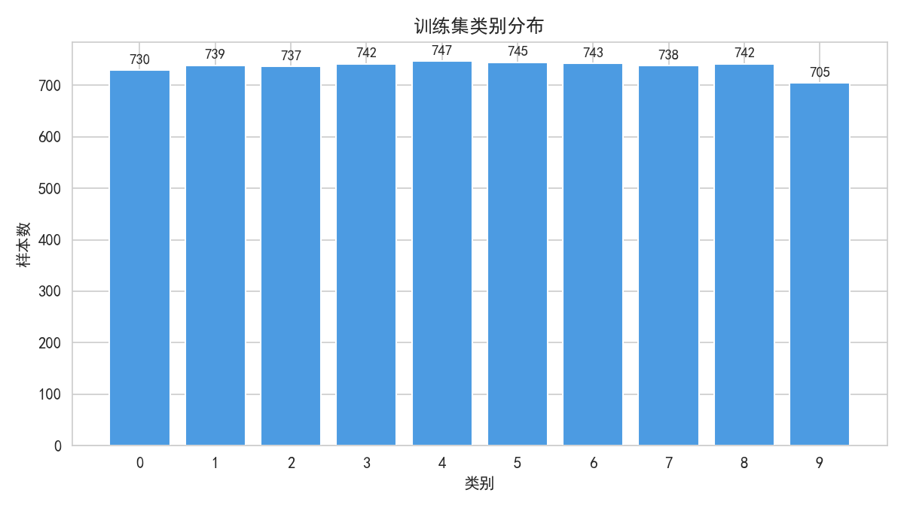
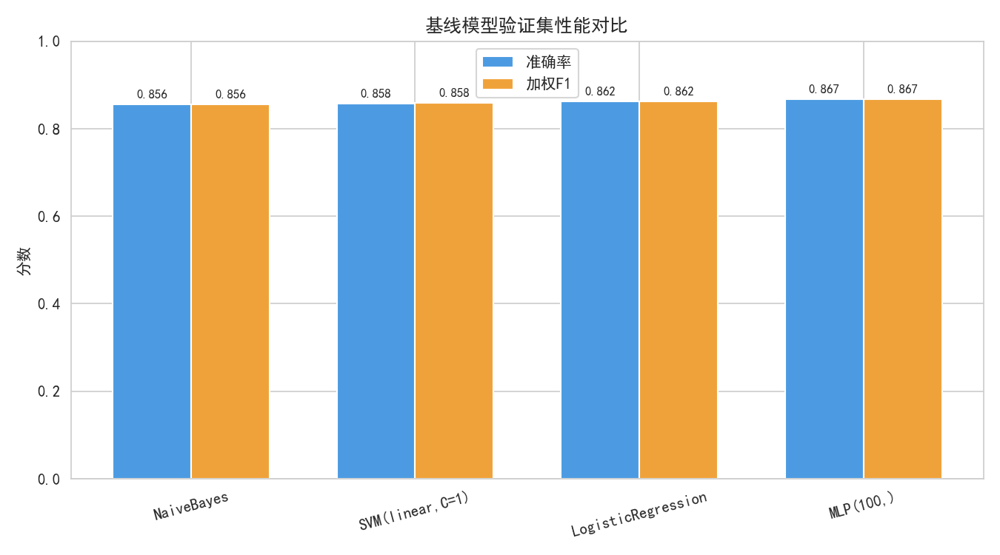
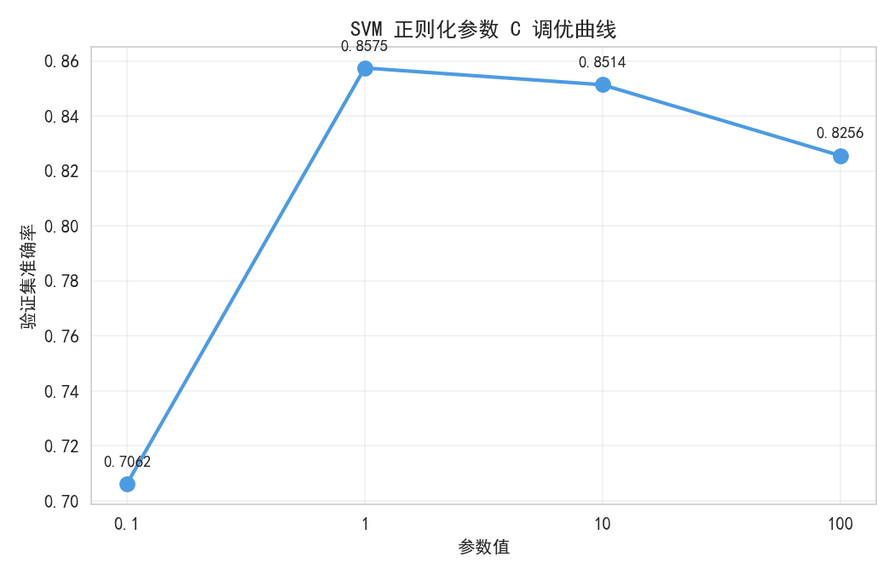
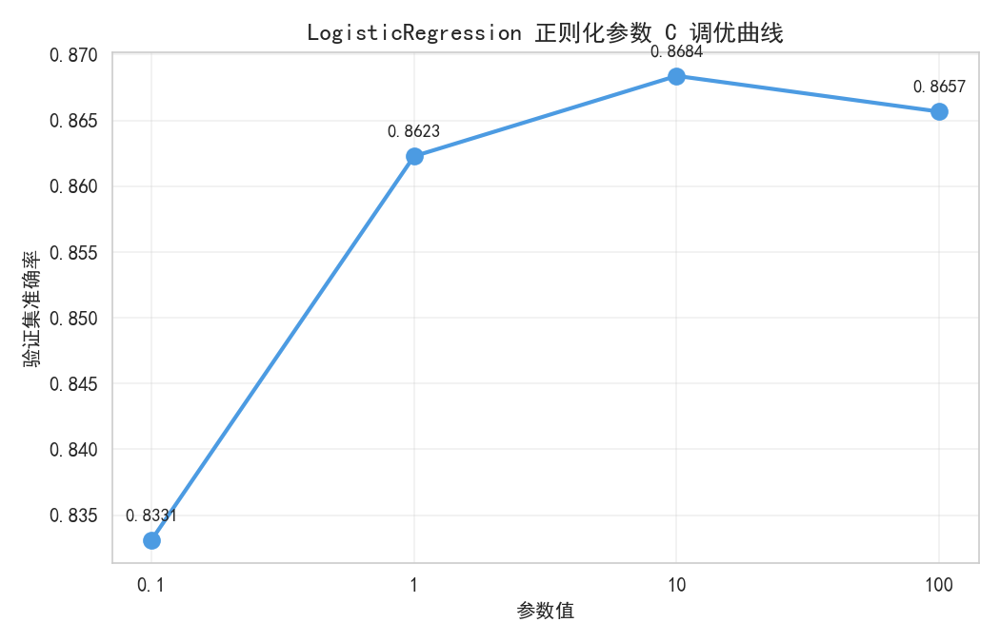
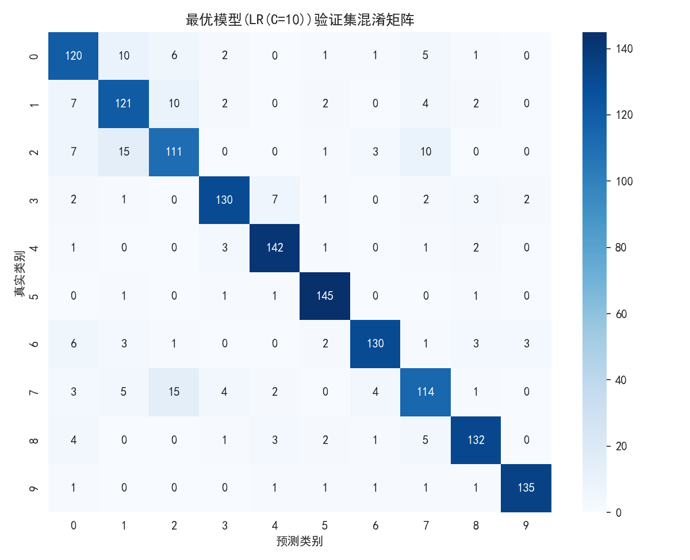

本实验以新闻文本10分类为任务，旨在：(1) 理解文本分类的基本概念与完整流程；(2) 实践文本预处理与 TF-IDF 特征提取；(3) 掌握朴素贝叶斯、支持向量机、逻辑回归、多层感知机四种经典分类算法；(4) 学习如何基于验证集评估、调参与比较不同模型。
数据集为新闻文本10分类数据集，已预划分为训练集（7368条）和无标签测试集（2457条）。训练集包含 text 与 target 两个字段，target 取值 0–9，各类别样本数基本均衡（705–747条）。

原始文本为新闻组邮件格式，包含 From、Subject、Organization、Lines 等邮件头字段及正文。预处理步骤如下：
采用 scikit-learn 的 TfidfVectorizer 将文本转为数值向量。核心参数为 max_features（词表最大规模）和 ngram_range（n-gram 范围）。为确定最优配置，以 SVM(linear, C=10) 为基准模型，对比了三种 TF-IDF 配置在验证集上的表现：
| TF-IDF 配置 | 词表规模 | n-gram | 验证集准确率 | 加权 F1 |
|---|---|---|---|---|
| 配置 A | 5,000 | (1,1) | 0.8107 | 0.8111 |
| 配置 B | 10,000 | (1,1) | 0.8270 | 0.8275 |
| 配置 C（采用） | 20,000 | (1,2) | 0.8514 | 0.8517 |
结果显示，更大的词表与二元语法（bigram）能显著提升分类性能，因为 bigram 能捕获短语级别的语义信息。最终选用 max_features=20000, ngram_range=(1,2), stop_words='english'。
本实验实现并比较以下四种模型：
遵循"先划分再处理、仅用训练集拟合"的原则，实验流程如下：
全程固定随机种子 RANDOM_STATE=42，保证结果可复现。

| 模型 | 验证集准确率 | 加权 F1 |
|---|---|---|
| NaiveBayes | 0.8562 | 0.8562 |
| SVM (linear, C=1) | 0.8575 | 0.8583 |
| LogisticRegression | 0.8623 | 0.8625 |
| MLP (100,) | 0.8670 | 0.8674 |
基线阶段，四种模型准确率均在 85%–87% 之间，差距不大。MLP 表现最优（0.8670），朴素贝叶斯最低（0.8562）但训练速度最快。LR 和 SVM 处于中间水平。


| 模型 | 参数 | 验证集准确率 | 加权 F1 | 趋势分析 |
|---|---|---|---|---|
| SVM | C=0.1 | 0.7062 | 0.7422 | 欠拟合，决策边界过宽 |
| C=1 | 0.8575 | 0.8583 | 最佳 | |
| C=10 | 0.8514 | 0.8517 | 开始下降 | |
| C=100 | 0.8256 | 0.8286 | 过拟合，泛化变差 | |
| LR | C=0.1 | 0.8331 | 0.8323 | 正则化过强 |
| C=1 | 0.8623 | 0.8625 | — | |
| C=10 | 0.8684 | 0.8683 | 最佳 | |
| C=100 | 0.8657 | 0.8654 | 轻微下降 | |
| MLP | (50,) | 0.8684 | 0.8686 | 最佳（与LR持平） |
| (100,) | 0.8670 | 0.8674 | — | |
| (200,) | 0.8677 | 0.8681 | — | |
| (100,50) | 0.8636 | 0.8644 | 两层网络反而下降 |
分析：(1) SVM 随 C 增大呈现先升后降的典型正则化曲线，C=0.1 时严重欠拟合，C=100 时过拟合。(2) LR 在 C=10 时达到最优 0.8684，优于 SVM 最佳值，说明 LR 的正则化机制在此数据上更灵活。(3) MLP 的隐藏层结构影响较小，(50,) 即可达到与 LR(C=10) 持平的 0.8684；更深网络 (100,50) 反而下降，说明模型复杂度过高时易过拟合。综合考虑模型复杂度与性能，选择 LR(C=10) 作为最终模型。

从分类报告看，类别 9（准确率 0.9609）和类别 5（0.9508）最易分类，而类别 2（0.7655）和类别 7（0.7835）最易混淆。类别 0、1、2、7 之间存在较多误分，推测这些类别在主题上有重叠（如均为计算机相关领域）。整体 macro F1 为 0.8684，各类别性能较均衡。
文本经 TF-IDF 向量化后是高维稀疏的（20000维，大部分为0）。SVM 和 LR 都是线性模型，在高维空间中线性可分的概率更高；同时稀疏性使得内积计算高效。此外，线性模型的参数较少，在训练样本有限时不容易过拟合，泛化能力强。相比之下，MLP 的非线性能力在高维稀疏输入上优势不明显，反而因参数多而有过拟合风险。
实验结果显示，MLP 从 (50,) 到 (200,) 性能变化不大（0.8684→0.8677），增加到两层 (100,50) 反而下降至 0.8636。这表明在当前 TF-IDF 特征表示下，模型容量已非瓶颈，特征表示才是限制因素。继续增大网络会加剧过拟合风险。要进一步提升，可考虑：(1) 使用 dropout 或增大 alpha 正则化；(2) 采用更好的特征表示（如 Word2Vec/BERT）。
cd data_project1 && python main.py本实验完成了新闻文本10分类任务，比较了四种经典模型在不同超参数下的验证集性能。最优模型为 LogisticRegression(C=10)，验证集准确率 86.84%，加权 F1 为 0.8683。实验发现：(1) TF-IDF 的词表规模和 n-gram 范围对性能影响显著，bigram 特征优于 unigram；(2) 线性模型（SVM、LR）在高维稀疏文本特征上表现稳定且高效；(3) MLP 的网络结构对性能影响较小，过深的网络易过拟合。实验局限性在于仅使用了 TF-IDF 特征，未来可尝试预训练语言模型以进一步提升分类性能。